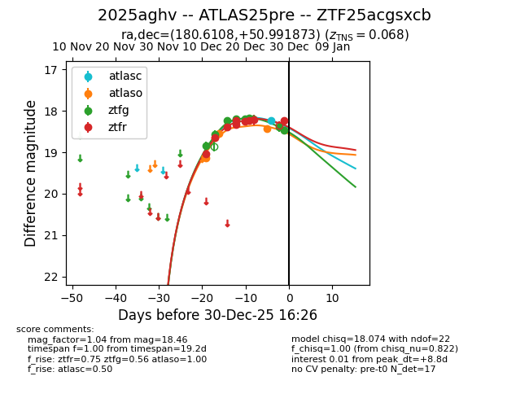
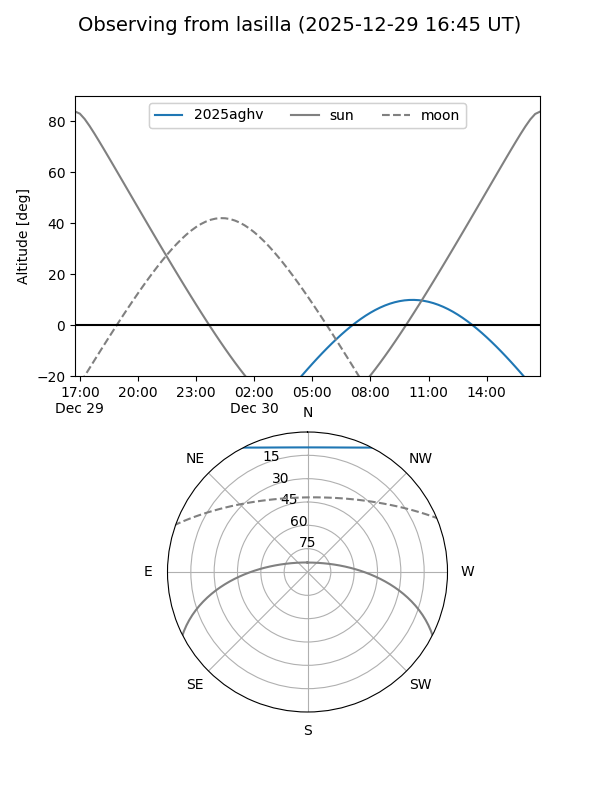
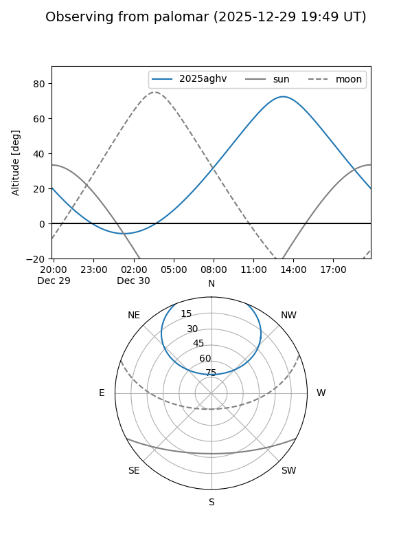
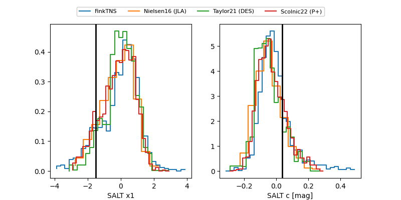

2025aghv
Target 2025aghv at 2025-12-30 16:53
Aliases and brokers:
FINK: fink-portal.org/ZTF25acgsxcb
Lasair: lasair-ztf.lsst.ac.uk/objects/ZTF25acgsxcb
ALeRCE: alerce.online/object/ZTF25acgsxcb
TNS: wis-tns.org/object/2025aghv
YSE: ziggy.ucolick.org/yse/transient_detail/2025aghv
alt names
ZTF25acgsxcb (ztf,fink_ztf)
2025aghv (tns,yse)
ATLAS25pre (atlas)
Coordinates:
equatorial (ra, dec) = 180.6108,+50.99187
equatorial (HMS+DMS) = 12:02:26.58,+50:59:30.74
galactic (l, b) = (140.9275,+64.39023)
Flags:
confirmed ia
Photometry:
last atlasc=18.24, atlaso=18.42, ztfg=18.46, ztfr=18.23
1 atlasc, 4 atlaso, 10 ztfg, 9 ztfr detections
Lightcurve

Visibility


Additional plots
